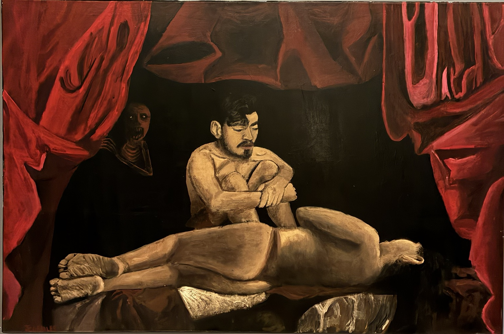

OBRA · 2025
Mi culpa

Sobre la obra
Mi culpa
Una escena construida alrededor de la responsabilidad, el juicio interior y la memoria. La composición utiliza el contraste y la presencia del cuerpo para convertir la culpa en una experiencia visual íntima y directa.
Adquirir
Consultar disponibilidad.
Esta obra se encuentra disponible. Para solicitar información sobre compra, envío o entrega, puedes ponerte en contacto directamente.
Consultar obra